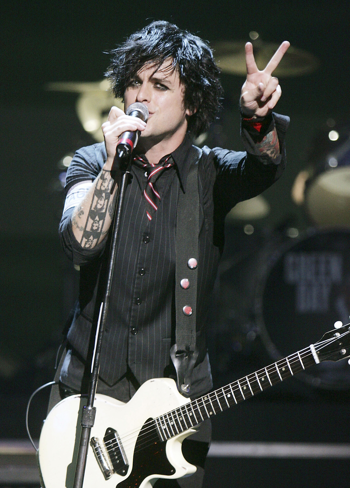

Billie Joe Armstrong (Oakland, California, Estados Unidos, 17 de febrero de 1972) es un músico, compositor y actor estadounidense, que es conocido por ser el cantante, líder y guitarrista principal de la banda estadounidense de punk rock Green Day.